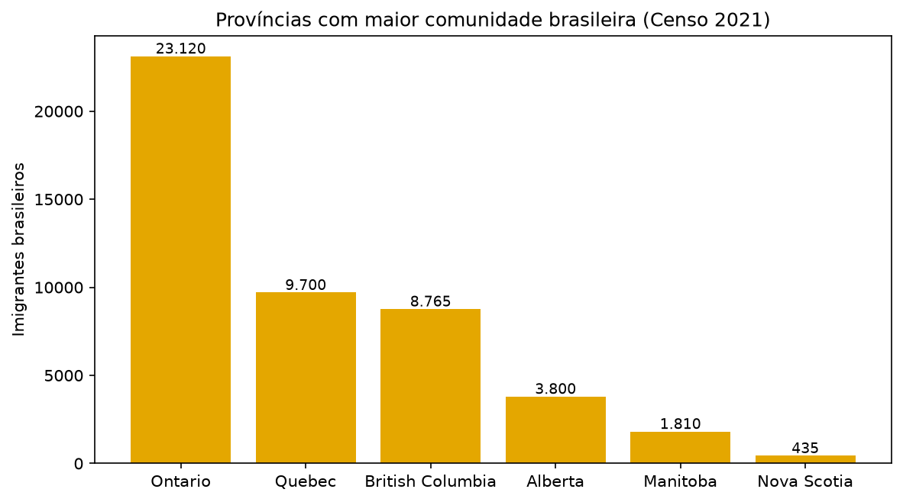

🦫
Só 9 de 13 jurisdições publicam salário provincial de NOC 21232. PEI e territórios ficam N/A. 💼

🥇 Maior mediana
BC — 52,40 CAD/hora
🥉 Menor mediana
NS — 40,87 CAD/hora
📈 Maior amplitude
BC — 52,88 (84,13 − 31,25)
🚫 Sem dado
PEI, Yukon, NWT, Nunavut
07
Brasileiros concentrados em ON, QC e BC; mais da metade chegou entre 2011–2021. 👥


08
🦫
ON (38,4%) e BC (37,8%) têm os maiores percentuais de inquilinos gastando ≥ 30% da renda em moradia. 🏠

🔴 Inacessível
ON 38,4% · BC 37,8% · NS 34,7%
🟢 Mais acessível
Nunavut 5,2% · NWT 15,6%
🏠 Core housing need
Nunavut 32,9% no total; QC tem o menor entre inquilinos (11,9%)
09
1 / 15